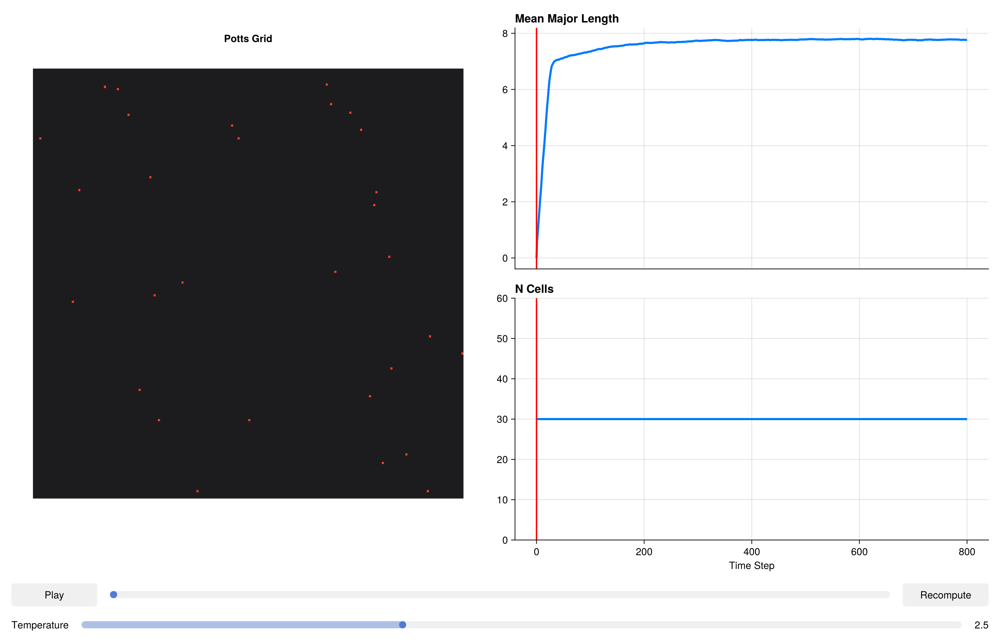

using CairoMakie
CairoMakie.activate!()Cell Elongation & Polarity
Many cell types in living tissues adopt elongated morphologies rather than compact rounded shapes. Fibroblasts, myotubes, and epithelial cells under mechanical stress all exhibit well-defined long axes. In the Potts this is captured by the LengthComponent, which penalises deviations of the cell's major-axis length (derived from the inertia-tensor eigendecomposition) from a prescribed target. Combining elongation with realistic cell division along the long axis (MajorAxisOrientation) recapitulates the oriented proliferation patterns seen in growing epithelia.
Packages
using PottsToolkit
using MakiePotts
using StatisticsCell-type definitions
We model two populations: elongated stromal cells (Fib) and a surrounding Medium. A single CellType call registers the label in the system.
Fib = CellType(:Fib)
Medium = CellType(:Medium, is_background = true)CellType(:Medium, true)Energy components
The LengthComponent computes the principal axis of each cell via its second-order central moments (inertia tensor). The penalty is:
H_length = λ · (L_major − target)²where L_major is the square-root of the larger eigenvalue of the moment matrix and target is the desired half-length. The eta parameter controls a soft-floor that prevents numerical blow-up for very small cells.
components = [
VolumeComponent(
Fib => (λ = 5.0f0, target = 400),
Medium => (λ = 0.0f0, target = 0)
),
SurfaceAreaComponent(
Fib => (λ = 1.0f0, target = 80),
),
AdhesionComponent(
(Fib, Medium) => 20.0f0,
(Fib, Fib) => 4.0f0
),
LengthComponent(
Fib => (λ = 3.0f0, target = 20.0f0);
eta = 1.0
)
]4-element Vector{AbstractComponent}:
VolumeComponent{Rigid}(Dict{CellType, @NamedTuple{target::Float32, λ::Float32}}(CellType(:Medium, true) => (target = 0.0, λ = 0.0), CellType(:Fib, false) => (target = 400.0, λ = 5.0)))
SurfaceAreaComponent{Rigid}(Dict{CellType, @NamedTuple{target::Float32, λ::Float32}}(CellType(:Fib, false) => (target = 80.0, λ = 1.0)), 1.0f0)
AdhesionComponent{Rigid, false}(Dict{Tuple{CellType, CellType}, Float32}((CellType(:Fib, false), CellType(:Medium, true)) => 20.0, (CellType(:Fib, false), CellType(:Fib, false)) => 4.0))
LengthComponent{Rigid}(Dict{CellType, @NamedTuple{target::Float32, λ::Float32}}(CellType(:Fib, false) => (target = 20.0, λ = 3.0)), 1.0f0)System and problem
We place 30 fibroblast-like cells on a 200×200 periodic grid and run for 800 MCS. VonNeumannTopology{2}() gives the standard 4-connected neighbourhood.
sys = PottsSystem(
cell_types = [Medium, Fib],
penalties = components,
events = [
MitosisEvent(Fib,
trigger = VolumeRatioTrigger(2.0f0),
orientation = MajorAxisOrientation(),
inheritance = (target_volumes = CorePotts.Split(0.5f0),)
)
]
)
prob = PottsProblem(
sys,
Dict(Fib => 30),
(200, 200);
tspan = (0, 800),
topology = VonNeumannTopology{2}(),
trackers = ()
)PottsProblem{PottsState{Matrix{UInt32}, StructArrays.StructVector{@NamedTuple{volumes::Int32, target_volumes::Int32, surface_areas::Int32, target_surface_areas::Int32, cell_types::UInt8, pressures::Float32, tensions::Float32, anchor_x::Float32, anchor_y::Float32, anchor_z::Float32, force_x::Float32, force_y::Float32, force_z::Float32, target_lengths::Float32, current_lengths::Float32, major_axis_x::Float32, major_axis_y::Float32, major_axis_z::Float32, length_pressures::Float32, com_acc_sin_x::Float32, com_acc_cos_x::Float32, com_acc_sin_y::Float32, com_acc_cos_y::Float32, com_acc_sin_z::Float32, com_acc_cos_z::Float32, inertia_xx::Float32, inertia_yy::Float32, inertia_zz::Float32, inertia_xy::Float32, inertia_xz::Float32, inertia_yz::Float32, volume_lambdas::Float32, surface_area_lambdas::Float32, length_lambdas::Float32, adhesion_modifiers::Float32}, @NamedTuple{volumes::Vector{Int32}, target_volumes::Vector{Int32}, surface_areas::Vector{Int32}, target_surface_areas::Vector{Int32}, cell_types::Vector{UInt8}, pressures::Vector{Float32}, tensions::Vector{Float32}, anchor_x::Vector{Float32}, anchor_y::Vector{Float32}, anchor_z::Vector{Float32}, force_x::Vector{Float32}, force_y::Vector{Float32}, force_z::Vector{Float32}, target_lengths::Vector{Float32}, current_lengths::Vector{Float32}, major_axis_x::Vector{Float32}, major_axis_y::Vector{Float32}, major_axis_z::Vector{Float32}, length_pressures::Vector{Float32}, com_acc_sin_x::Vector{Float32}, com_acc_cos_x::Vector{Float32}, com_acc_sin_y::Vector{Float32}, com_acc_cos_y::Vector{Float32}, com_acc_sin_z::Vector{Float32}, com_acc_cos_z::Vector{Float32}, inertia_xx::Vector{Float32}, inertia_yy::Vector{Float32}, inertia_zz::Vector{Float32}, inertia_xy::Vector{Float32}, inertia_xz::Vector{Float32}, inertia_yz::Vector{Float32}, volume_lambdas::Vector{Float32}, surface_area_lambdas::Vector{Float32}, length_lambdas::Vector{Float32}, adhesion_modifiers::Vector{Float32}}, Int64}, Vector{Int32}, Vector{UInt32}}, Int64, PottsParameters{VonNeumannTopology{2}, Tuple{VolumePenalty{Rigid, Vector{Float32}}, HSTSurfaceAreaPenalty{Rigid, Vector{Float32}, Float32}, AdhesionPenalty{Rigid, Matrix{Float32}, false}, HSTLengthPenalty{Rigid, Vector{Float32}, Float32}}, Tuple{VolumeTracker, SurfaceAreaTracker}, Tuple{PottsToolkit.Events.ResolvedMitosisEvent{VolumeRatioTrigger, MajorAxisOrientation, @NamedTuple{target_volumes::Split}, Nothing}}}, Base.Pairs{Symbol, Union{}, Nothing, @NamedTuple{}}}(PottsState{Matrix{UInt32}, StructArrays.StructVector{@NamedTuple{volumes::Int32, target_volumes::Int32, surface_areas::Int32, target_surface_areas::Int32, cell_types::UInt8, pressures::Float32, tensions::Float32, anchor_x::Float32, anchor_y::Float32, anchor_z::Float32, force_x::Float32, force_y::Float32, force_z::Float32, target_lengths::Float32, current_lengths::Float32, major_axis_x::Float32, major_axis_y::Float32, major_axis_z::Float32, length_pressures::Float32, com_acc_sin_x::Float32, com_acc_cos_x::Float32, com_acc_sin_y::Float32, com_acc_cos_y::Float32, com_acc_sin_z::Float32, com_acc_cos_z::Float32, inertia_xx::Float32, inertia_yy::Float32, inertia_zz::Float32, inertia_xy::Float32, inertia_xz::Float32, inertia_yz::Float32, volume_lambdas::Float32, surface_area_lambdas::Float32, length_lambdas::Float32, adhesion_modifiers::Float32}, @NamedTuple{volumes::Vector{Int32}, target_volumes::Vector{Int32}, surface_areas::Vector{Int32}, target_surface_areas::Vector{Int32}, cell_types::Vector{UInt8}, pressures::Vector{Float32}, tensions::Vector{Float32}, anchor_x::Vector{Float32}, anchor_y::Vector{Float32}, anchor_z::Vector{Float32}, force_x::Vector{Float32}, force_y::Vector{Float32}, force_z::Vector{Float32}, target_lengths::Vector{Float32}, current_lengths::Vector{Float32}, major_axis_x::Vector{Float32}, major_axis_y::Vector{Float32}, major_axis_z::Vector{Float32}, length_pressures::Vector{Float32}, com_acc_sin_x::Vector{Float32}, com_acc_cos_x::Vector{Float32}, com_acc_sin_y::Vector{Float32}, com_acc_cos_y::Vector{Float32}, com_acc_sin_z::Vector{Float32}, com_acc_cos_z::Vector{Float32}, inertia_xx::Vector{Float32}, inertia_yy::Vector{Float32}, inertia_zz::Vector{Float32}, inertia_xy::Vector{Float32}, inertia_xz::Vector{Float32}, inertia_yz::Vector{Float32}, volume_lambdas::Vector{Float32}, surface_area_lambdas::Vector{Float32}, length_lambdas::Vector{Float32}, adhesion_modifiers::Vector{Float32}}, Int64}, Vector{Int32}, Vector{UInt32}}(UInt32[0x00000000 0x00000000 … 0x00000000 0x00000000; 0x00000000 0x00000000 … 0x00000000 0x00000000; … ; 0x00000000 0x00000000 … 0x00000000 0x00000000; 0x00000000 0x00000000 … 0x00000000 0x00000000], @NamedTuple{volumes::Int32, target_volumes::Int32, surface_areas::Int32, target_surface_areas::Int32, cell_types::UInt8, pressures::Float32, tensions::Float32, anchor_x::Float32, anchor_y::Float32, anchor_z::Float32, force_x::Float32, force_y::Float32, force_z::Float32, target_lengths::Float32, current_lengths::Float32, major_axis_x::Float32, major_axis_y::Float32, major_axis_z::Float32, length_pressures::Float32, com_acc_sin_x::Float32, com_acc_cos_x::Float32, com_acc_sin_y::Float32, com_acc_cos_y::Float32, com_acc_sin_z::Float32, com_acc_cos_z::Float32, inertia_xx::Float32, inertia_yy::Float32, inertia_zz::Float32, inertia_xy::Float32, inertia_xz::Float32, inertia_yz::Float32, volume_lambdas::Float32, surface_area_lambdas::Float32, length_lambdas::Float32, adhesion_modifiers::Float32}[(volumes = 1, target_volumes = 400, surface_areas = 4, target_surface_areas = 80, cell_types = 0x01, pressures = 0.0, tensions = 0.0, anchor_x = 184.0, anchor_y = 75.0, anchor_z = 0.0, force_x = 0.0, force_y = 0.0, force_z = 0.0, target_lengths = 20.0, current_lengths = 0.0, major_axis_x = 0.0, major_axis_y = 0.0, major_axis_z = 0.0, length_pressures = 0.0, com_acc_sin_x = -0.4817537, com_acc_cos_x = 0.87630665, com_acc_sin_y = 0.70710677, com_acc_cos_y = -0.70710677, com_acc_sin_z = 0.0, com_acc_cos_z = 0.0, inertia_xx = 0.0, inertia_yy = 0.0, inertia_zz = 0.0, inertia_xy = 0.0, inertia_xz = 0.0, inertia_yz = 0.0, volume_lambdas = 0.0, surface_area_lambdas = 0.0, length_lambdas = 0.0, adhesion_modifiers = 0.0), (volumes = 1, target_volumes = 400, surface_areas = 4, target_surface_areas = 80, cell_types = 0x01, pressures = 0.0, tensions = 0.0, anchor_x = 173.00002, anchor_y = 20.0, anchor_z = 0.0, force_x = 0.0, force_y = 0.0, force_z = 0.0, target_lengths = 20.0, current_lengths = 0.0, major_axis_x = 0.0, major_axis_y = 0.0, major_axis_z = 0.0, length_pressures = 0.0, com_acc_sin_x = -0.75011086, com_acc_cos_x = 0.6613121, com_acc_sin_y = 0.58778524, com_acc_cos_y = 0.809017, com_acc_sin_z = 0.0, com_acc_cos_z = 0.0, inertia_xx = 0.0, inertia_yy = 0.0, inertia_zz = 0.0, inertia_xy = 0.0, inertia_xz = 0.0, inertia_yz = 0.0, volume_lambdas = 0.0, surface_area_lambdas = 0.0, length_lambdas = 0.0, adhesion_modifiers = 0.0), (volumes = 1, target_volumes = 400, surface_areas = 4, target_surface_areas = 80, cell_types = 0x01, pressures = 0.0, tensions = 0.0, anchor_x = 21.0, anchor_y = 143.00002, anchor_z = 0.0, force_x = 0.0, force_y = 0.0, force_z = 0.0, target_lengths = 20.0, current_lengths = 0.0, major_axis_x = 0.0, major_axis_y = 0.0, major_axis_z = 0.0, length_pressures = 0.0, com_acc_sin_x = 0.61290705, com_acc_cos_x = 0.790155, com_acc_sin_y = -0.97591686, com_acc_cos_y = -0.21814285, com_acc_sin_z = 0.0, com_acc_cos_z = 0.0, inertia_xx = 0.0, inertia_yy = 0.0, inertia_zz = 0.0, inertia_xy = 0.0, inertia_xz = 0.0, inertia_yz = 0.0, volume_lambdas = 0.0, surface_area_lambdas = 0.0, length_lambdas = 0.0, adhesion_modifiers = 0.0), (volumes = 1, target_volumes = 400, surface_areas = 4, target_surface_areas = 80, cell_types = 0x01, pressures = 0.0, tensions = 0.0, anchor_x = 95.00001, anchor_y = 167.00002, anchor_z = 0.0, force_x = 0.0, force_y = 0.0, force_z = 0.0, target_lengths = 20.0, current_lengths = 0.0, major_axis_x = 0.0, major_axis_y = 0.0, major_axis_z = 0.0, length_pressures = 0.0, com_acc_sin_x = 0.15643421, com_acc_cos_x = -0.98768836, com_acc_sin_y = -0.8607419, com_acc_cos_y = 0.5090416, com_acc_sin_z = 0.0, com_acc_cos_z = 0.0, inertia_xx = 0.0, inertia_yy = 0.0, inertia_zz = 0.0, inertia_xy = 0.0, inertia_xz = 0.0, inertia_yz = 0.0, volume_lambdas = 0.0, surface_area_lambdas = 0.0, length_lambdas = 0.0, adhesion_modifiers = 0.0), (volumes = 1, target_volumes = 400, surface_areas = 4, target_surface_areas = 80, cell_types = 0x01, pressures = 0.0, tensions = 0.0, anchor_x = 58.0, anchor_y = 36.0, anchor_z = 0.0, force_x = 0.0, force_y = 0.0, force_z = 0.0, target_lengths = 20.0, current_lengths = 0.0, major_axis_x = 0.0, major_axis_y = 0.0, major_axis_z = 0.0, length_pressures = 0.0, com_acc_sin_x = 0.96858317, com_acc_cos_x = -0.24868992, com_acc_sin_y = 0.90482706, com_acc_cos_y = 0.4257793, com_acc_sin_z = 0.0, com_acc_cos_z = 0.0, inertia_xx = 0.0, inertia_yy = 0.0, inertia_zz = 0.0, inertia_xy = 0.0, inertia_xz = 0.0, inertia_yz = 0.0, volume_lambdas = 0.0, surface_area_lambdas = 0.0, length_lambdas = 0.0, adhesion_modifiers = 0.0), (volumes = 1, target_volumes = 400, surface_areas = 4, target_surface_areas = 80, cell_types = 0x01, pressures = 0.0, tensions = 0.0, anchor_x = 18.0, anchor_y = 91.00001, anchor_z = 0.0, force_x = 0.0, force_y = 0.0, force_z = 0.0, target_lengths = 20.0, current_lengths = 0.0, major_axis_x = 0.0, major_axis_y = 0.0, major_axis_z = 0.0, length_pressures = 0.0, com_acc_sin_x = 0.5358268, com_acc_cos_x = 0.8443279, com_acc_sin_y = 0.2789909, com_acc_cos_y = -0.96029377, com_acc_sin_z = 0.0, com_acc_cos_z = 0.0, inertia_xx = 0.0, inertia_yy = 0.0, inertia_zz = 0.0, inertia_xy = 0.0, inertia_xz = 0.0, inertia_yz = 0.0, volume_lambdas = 0.0, surface_area_lambdas = 0.0, length_lambdas = 0.0, adhesion_modifiers = 0.0), (volumes = 1, target_volumes = 400, surface_areas = 4, target_surface_areas = 80, cell_types = 0x01, pressures = 0.0, tensions = 0.0, anchor_x = 3.0, anchor_y = 167.00002, anchor_z = 0.0, force_x = 0.0, force_y = 0.0, force_z = 0.0, target_lengths = 20.0, current_lengths = 0.0, major_axis_x = 0.0, major_axis_y = 0.0, major_axis_z = 0.0, length_pressures = 0.0, com_acc_sin_x = 0.09410831, com_acc_cos_x = 0.99556196, com_acc_sin_y = -0.8607419, com_acc_cos_y = 0.5090416, com_acc_sin_z = 0.0, com_acc_cos_z = 0.0, inertia_xx = 0.0, inertia_yy = 0.0, inertia_zz = 0.0, inertia_xy = 0.0, inertia_xz = 0.0, inertia_yz = 0.0, volume_lambdas = 0.0, surface_area_lambdas = 0.0, length_lambdas = 0.0, adhesion_modifiers = 0.0), (volumes = 1, target_volumes = 400, surface_areas = 4, target_surface_areas = 80, cell_types = 0x01, pressures = 0.0, tensions = 0.0, anchor_x = 69.0, anchor_y = 100.00001, anchor_z = 0.0, force_x = 0.0, force_y = 0.0, force_z = 0.0, target_lengths = 20.0, current_lengths = 0.0, major_axis_x = 0.0, major_axis_y = 0.0, major_axis_z = 0.0, length_pressures = 0.0, com_acc_sin_x = 0.8270806, com_acc_cos_x = -0.5620833, com_acc_sin_y = -8.742278f-8, com_acc_cos_y = -1.0, com_acc_sin_z = 0.0, com_acc_cos_z = 0.0, inertia_xx = 0.0, inertia_yy = 0.0, inertia_zz = 0.0, inertia_xy = 0.0, inertia_xz = 0.0, inertia_yz = 0.0, volume_lambdas = 0.0, surface_area_lambdas = 0.0, length_lambdas = 0.0, adhesion_modifiers = 0.0), (volumes = 1, target_volumes = 400, surface_areas = 4, target_surface_areas = 80, cell_types = 0x01, pressures = 0.0, tensions = 0.0, anchor_x = 33.0, anchor_y = 191.0, anchor_z = 0.0, force_x = 0.0, force_y = 0.0, force_z = 0.0, target_lengths = 20.0, current_lengths = 0.0, major_axis_x = 0.0, major_axis_y = 0.0, major_axis_z = 0.0, length_pressures = 0.0, com_acc_sin_x = 0.86074203, com_acc_cos_x = 0.50904137, com_acc_sin_y = -0.27899104, com_acc_cos_y = 0.9602937, com_acc_sin_z = 0.0, com_acc_cos_z = 0.0, inertia_xx = 0.0, inertia_yy = 0.0, inertia_zz = 0.0, inertia_xy = 0.0, inertia_xz = 0.0, inertia_yz = 0.0, volume_lambdas = 0.0, surface_area_lambdas = 0.0, length_lambdas = 0.0, adhesion_modifiers = 0.0), (volumes = 1, target_volumes = 400, surface_areas = 4, target_surface_areas = 80, cell_types = 0x01, pressures = 0.0, tensions = 0.0, anchor_x = 56.000004, anchor_y = 94.00001, anchor_z = 0.0, force_x = 0.0, force_y = 0.0, force_z = 0.0, target_lengths = 20.0, current_lengths = 0.0, major_axis_x = 0.0, major_axis_y = 0.0, major_axis_z = 0.0, length_pressures = 0.0, com_acc_sin_x = 0.9822872, com_acc_cos_x = -0.18738143, com_acc_sin_y = 0.18738107, com_acc_cos_y = -0.9822873, com_acc_sin_z = 0.0, com_acc_cos_z = 0.0, inertia_xx = 0.0, inertia_yy = 0.0, inertia_zz = 0.0, inertia_xy = 0.0, inertia_xz = 0.0, inertia_yz = 0.0, volume_lambdas = 0.0, surface_area_lambdas = 0.0, length_lambdas = 0.0, adhesion_modifiers = 0.0) … (volumes = 1, target_volumes = 400, surface_areas = 4, target_surface_areas = 80, cell_types = 0x01, pressures = 0.0, tensions = 0.0, anchor_x = 147.00002, anchor_y = 179.0, anchor_z = 0.0, force_x = 0.0, force_y = 0.0, force_z = 0.0, target_lengths = 20.0, current_lengths = 0.0, major_axis_x = 0.0, major_axis_y = 0.0, major_axis_z = 0.0, length_pressures = 0.0, com_acc_sin_x = -0.995562, com_acc_cos_x = -0.09410787, com_acc_sin_y = -0.6129071, com_acc_cos_y = 0.79015493, com_acc_sin_z = 0.0, com_acc_cos_z = 0.0, inertia_xx = 0.0, inertia_yy = 0.0, inertia_zz = 0.0, inertia_xy = 0.0, inertia_xz = 0.0, inertia_yz = 0.0, volume_lambdas = 0.0, surface_area_lambdas = 0.0, length_lambdas = 0.0, adhesion_modifiers = 0.0), (volumes = 1, target_volumes = 400, surface_areas = 4, target_surface_areas = 80, cell_types = 0x01, pressures = 0.0, tensions = 0.0, anchor_x = 76.0, anchor_y = 3.0, anchor_z = 0.0, force_x = 0.0, force_y = 0.0, force_z = 0.0, target_lengths = 20.0, current_lengths = 0.0, major_axis_x = 0.0, major_axis_y = 0.0, major_axis_z = 0.0, length_pressures = 0.0, com_acc_sin_x = 0.68454707, com_acc_cos_x = -0.7289686, com_acc_sin_y = 0.09410831, com_acc_cos_y = 0.99556196, com_acc_sin_z = 0.0, com_acc_cos_z = 0.0, inertia_xx = 0.0, inertia_yy = 0.0, inertia_zz = 0.0, inertia_xy = 0.0, inertia_xz = 0.0, inertia_yz = 0.0, volume_lambdas = 0.0, surface_area_lambdas = 0.0, length_lambdas = 0.0, adhesion_modifiers = 0.0), (volumes = 1, target_volumes = 400, surface_areas = 4, target_surface_areas = 80, cell_types = 0x01, pressures = 0.0, tensions = 0.0, anchor_x = 152.0, anchor_y = 171.0, anchor_z = 0.0, force_x = 0.0, force_y = 0.0, force_z = 0.0, target_lengths = 20.0, current_lengths = 0.0, major_axis_x = 0.0, major_axis_y = 0.0, major_axis_z = 0.0, length_pressures = 0.0, com_acc_sin_x = -0.9980267, com_acc_cos_x = 0.06279056, com_acc_sin_y = -0.7901551, com_acc_cos_y = 0.6129069, com_acc_sin_z = 0.0, com_acc_cos_z = 0.0, inertia_xx = 0.0, inertia_yy = 0.0, inertia_zz = 0.0, inertia_xy = 0.0, inertia_xz = 0.0, inertia_yz = 0.0, volume_lambdas = 0.0, surface_area_lambdas = 0.0, length_lambdas = 0.0, adhesion_modifiers = 0.0), (volumes = 1, target_volumes = 400, surface_areas = 4, target_surface_areas = 80, cell_types = 0x01, pressures = 0.0, tensions = 0.0, anchor_x = 158.0, anchor_y = 136.00002, anchor_z = 0.0, force_x = 0.0, force_y = 0.0, force_z = 0.0, target_lengths = 20.0, current_lengths = 0.0, major_axis_x = 0.0, major_axis_y = 0.0, major_axis_z = 0.0, length_pressures = 0.0, com_acc_sin_x = -0.9685831, com_acc_cos_x = 0.24869, com_acc_sin_y = -0.9048272, com_acc_cos_y = -0.425779, com_acc_sin_z = 0.0, com_acc_cos_z = 0.0, inertia_xx = 0.0, inertia_yy = 0.0, inertia_zz = 0.0, inertia_xy = 0.0, inertia_xz = 0.0, inertia_yz = 0.0, volume_lambdas = 0.0, surface_area_lambdas = 0.0, length_lambdas = 0.0, adhesion_modifiers = 0.0), (volumes = 1, target_volumes = 400, surface_areas = 4, target_surface_areas = 80, cell_types = 0x01, pressures = 0.0, tensions = 0.0, anchor_x = 199.0, anchor_y = 66.99999, anchor_z = 0.0, force_x = 0.0, force_y = 0.0, force_z = 0.0, target_lengths = 20.0, current_lengths = 0.0, major_axis_x = 0.0, major_axis_y = 0.0, major_axis_z = 0.0, length_pressures = 0.0, com_acc_sin_x = -0.031410597, com_acc_cos_x = 0.9995066, com_acc_sin_y = 0.8607421, com_acc_cos_y = -0.5090413, com_acc_sin_z = 0.0, com_acc_cos_z = 0.0, inertia_xx = 0.0, inertia_yy = 0.0, inertia_zz = 0.0, inertia_xy = 0.0, inertia_xz = 0.0, inertia_yz = 0.0, volume_lambdas = 0.0, surface_area_lambdas = 0.0, length_lambdas = 0.0, adhesion_modifiers = 0.0), (volumes = 1, target_volumes = 400, surface_areas = 4, target_surface_areas = 80, cell_types = 0x01, pressures = 0.0, tensions = 0.0, anchor_x = 183.00002, anchor_y = 3.0, anchor_z = 0.0, force_x = 0.0, force_y = 0.0, force_z = 0.0, target_lengths = 20.0, current_lengths = 0.0, major_axis_x = 0.0, major_axis_y = 0.0, major_axis_z = 0.0, length_pressures = 0.0, com_acc_sin_x = -0.5090411, com_acc_cos_x = 0.8607423, com_acc_sin_y = 0.09410831, com_acc_cos_y = 0.99556196, com_acc_sin_z = 0.0, com_acc_cos_z = 0.0, inertia_xx = 0.0, inertia_yy = 0.0, inertia_zz = 0.0, inertia_xy = 0.0, inertia_xz = 0.0, inertia_yz = 0.0, volume_lambdas = 0.0, surface_area_lambdas = 0.0, length_lambdas = 0.0, adhesion_modifiers = 0.0), (volumes = 1, target_volumes = 400, surface_areas = 4, target_surface_areas = 80, cell_types = 0x01, pressures = 0.0, tensions = 0.0, anchor_x = 138.0, anchor_y = 183.00002, anchor_z = 0.0, force_x = 0.0, force_y = 0.0, force_z = 0.0, target_lengths = 20.0, current_lengths = 0.0, major_axis_x = 0.0, major_axis_y = 0.0, major_axis_z = 0.0, length_pressures = 0.0, com_acc_sin_x = -0.92977643, com_acc_cos_x = -0.3681247, com_acc_sin_y = -0.5090411, com_acc_cos_y = 0.8607423, com_acc_sin_z = 0.0, com_acc_cos_z = 0.0, inertia_xx = 0.0, inertia_yy = 0.0, inertia_zz = 0.0, inertia_xy = 0.0, inertia_xz = 0.0, inertia_yz = 0.0, volume_lambdas = 0.0, surface_area_lambdas = 0.0, length_lambdas = 0.0, adhesion_modifiers = 0.0), (volumes = 1, target_volumes = 400, surface_areas = 4, target_surface_areas = 80, cell_types = 0x01, pressures = 0.0, tensions = 0.0, anchor_x = 136.00002, anchor_y = 192.0, anchor_z = 0.0, force_x = 0.0, force_y = 0.0, force_z = 0.0, target_lengths = 20.0, current_lengths = 0.0, major_axis_x = 0.0, major_axis_y = 0.0, major_axis_z = 0.0, length_pressures = 0.0, com_acc_sin_x = -0.9048272, com_acc_cos_x = -0.425779, com_acc_sin_y = -0.24868982, com_acc_cos_y = 0.96858317, com_acc_sin_z = 0.0, com_acc_cos_z = 0.0, inertia_xx = 0.0, inertia_yy = 0.0, inertia_zz = 0.0, inertia_xy = 0.0, inertia_xz = 0.0, inertia_yz = 0.0, volume_lambdas = 0.0, surface_area_lambdas = 0.0, length_lambdas = 0.0, adhesion_modifiers = 0.0), (volumes = 1, target_volumes = 400, surface_areas = 4, target_surface_areas = 80, cell_types = 0x01, pressures = 0.0, tensions = 0.0, anchor_x = 166.0, anchor_y = 60.0, anchor_z = 0.0, force_x = 0.0, force_y = 0.0, force_z = 0.0, target_lengths = 20.0, current_lengths = 0.0, major_axis_x = 0.0, major_axis_y = 0.0, major_axis_z = 0.0, length_pressures = 0.0, com_acc_sin_x = -0.8763066, com_acc_cos_x = 0.48175386, com_acc_sin_y = 0.9510565, com_acc_cos_y = -0.30901703, com_acc_sin_z = 0.0, com_acc_cos_z = 0.0, inertia_xx = 0.0, inertia_yy = 0.0, inertia_zz = 0.0, inertia_xy = 0.0, inertia_xz = 0.0, inertia_yz = 0.0, volume_lambdas = 0.0, surface_area_lambdas = 0.0, length_lambdas = 0.0, adhesion_modifiers = 0.0), (volumes = 1, target_volumes = 400, surface_areas = 4, target_surface_areas = 80, cell_types = 0x01, pressures = 0.0, tensions = 0.0, anchor_x = 39.0, anchor_y = 190.00002, anchor_z = 0.0, force_x = 0.0, force_y = 0.0, force_z = 0.0, target_lengths = 20.0, current_lengths = 0.0, major_axis_x = 0.0, major_axis_y = 0.0, major_axis_z = 0.0, length_pressures = 0.0, com_acc_sin_x = 0.9408808, com_acc_cos_x = 0.3387379, com_acc_sin_y = -0.3090165, com_acc_cos_y = 0.95105666, com_acc_sin_z = 0.0, com_acc_cos_z = 0.0, inertia_xx = 0.0, inertia_yy = 0.0, inertia_zz = 0.0, inertia_xy = 0.0, inertia_xz = 0.0, inertia_yz = 0.0, volume_lambdas = 0.0, surface_area_lambdas = 0.0, length_lambdas = 0.0, adhesion_modifiers = 0.0)], Int32[30], UInt32[0x00000000, 0x00000000, 0x00000000, 0x00000000, 0x00000000, 0x00000000, 0x00000000, 0x00000000, 0x00000000, 0x00000000 … 0x00000000, 0x00000000, 0x00000000, 0x00000000, 0x00000000, 0x00000000, 0x00000000, 0x00000000, 0x00000000, 0x00000000], Int32[0]), (0, 800), PottsParameters{VonNeumannTopology{2}, Tuple{VolumePenalty{Rigid, Vector{Float32}}, HSTSurfaceAreaPenalty{Rigid, Vector{Float32}, Float32}, AdhesionPenalty{Rigid, Matrix{Float32}, false}, HSTLengthPenalty{Rigid, Vector{Float32}, Float32}}, Tuple{VolumeTracker, SurfaceAreaTracker}, Tuple{PottsToolkit.Events.ResolvedMitosisEvent{VolumeRatioTrigger, MajorAxisOrientation, @NamedTuple{target_volumes::Split}, Nothing}}}(VonNeumannTopology{2}(), (VolumePenalty{Rigid, Vector{Float32}}(Float32[0.0, 5.0]), HSTSurfaceAreaPenalty{Rigid, Vector{Float32}, Float32}(Float32[0.0, 1.0], 1.0f0), AdhesionPenalty{Rigid, Matrix{Float32}, false}(Float32[0.0 20.0; 20.0 4.0]), HSTLengthPenalty{Rigid, Vector{Float32}, Float32}(Float32[0.0, 3.0], 1.0f0)), (VolumeTracker(), SurfaceAreaTracker()), (PottsToolkit.Events.ResolvedMitosisEvent{VolumeRatioTrigger, MajorAxisOrientation, @NamedTuple{target_volumes::Split}, Nothing}(10, 0x01, VolumeRatioTrigger(2.0f0), MajorAxisOrientation(), (target_volumes = Split(0.5f0),), nothing),)), Base.Pairs{Symbol, Union{}, Nothing, @NamedTuple{}}())Growth and Mitosis Native Event
LinearGrowthCallback slowly inflates the target volume (0.3 area units / MCS). Once a cell reaches twice its initial target volume, the native MitosisEvent fires. MajorAxisOrientation places the division plane perpendicular to the long axis, so each daughter inherits an elongated shape — exactly as seen in oriented cell divisions in vivo.
growth_cb = LinearGrowthCallback(0.3f0)
using SciMLBase
cb = SciMLBase.CallbackSet(
SciMLBase.DiscreteCallback((u, t, i) -> true, i -> growth_cb(i))
)SciMLBase.CallbackSet{Tuple{}, Tuple{SciMLBase.DiscreteCallback{Main.var"#3#4", Main.var"#5#6", typeof(SciMLBase.INITIALIZE_DEFAULT), typeof(SciMLBase.FINALIZE_DEFAULT), Nothing, Tuple{}}}}((), (SciMLBase.DiscreteCallback{Main.var"#3#4", Main.var"#5#6", typeof(SciMLBase.INITIALIZE_DEFAULT), typeof(SciMLBase.FINALIZE_DEFAULT), Nothing, Tuple{}}(Main.var"#3#4"(), Main.var"#5#6"(), SciMLBase.INITIALIZE_DEFAULT, SciMLBase.FINALIZE_DEFAULT, Bool[1, 1], nothing, (), true),))Algorithm
alg = CheckerboardMetropolis(T = 2.5f0, sweeps_per_step = 10)CheckerboardMetropolis{MetropolisSampler, Float32, Int32}(MetropolisSampler(1.0f0), 2.5f0, 0.1f0, 10)Interactive exploration
explore_potts opens a live dashboard. The "Mean Major Length" metric is computed directly from the integrator state at every saved frame. The Temperature slider triggers a full re-solve so you can observe how lower T freezes elongation while higher T disorders the tissue.
fig = explore_potts(
prob, alg;
metrics = [
"Mean Major Length" =>
u -> begin
n = u.N_cells[]
n == 0 ? 0.0 : mean(Array(u.cell_data.current_lengths)[1:n])
end,
"N Cells" => u -> u.N_cells[]
],
parameters = [
"Temperature" => (
range = 0.5f0:0.5f0:6.0f0,
start = 2.5f0,
action = (prob, alg, val) -> CheckerboardMetropolis(T = val, sweeps_per_step = 10)
),
]
)
This page was generated using Literate.jl.